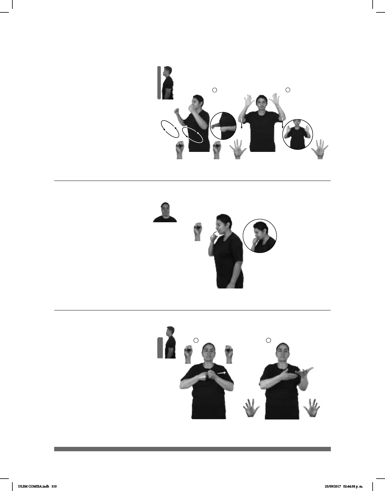

310
(S-50)
1
2
Seña: SM
S.1
Palma hacia dentro.
A la altura de la nariz y la
boca.
Cabeza
inclinada hacia adelante, ojos cerrados,
boca
mostrando los dientes.
Simula un estornudo.
v. intr. Echar aire por la nariz
y la boca, repentina e incontrolablemente,
como efecto de una contracción de los
músculos de los órganos respiratorios
causada por irritación de la mucosa nasal
como cuando se está resfriado.
(S-49 )
DICIEMBRE MUCHAS PERSONAS CL: 55
gran cantidad
ESQUIAR IR
En diciembre muchas personas van a esquiar.
___muy
POLVO pro-YO MUCHO ESTORNUDAR
Con mucho polvo, yo estornudo mucho.
Seña: SC: I. y II. SS
I. S.1; II. 5.1
I. Las palmas se encuentran
frente a frente; II. Palmas hacia fuera.
I. A la altura del pecho; II. A la
altura de la cabeza.
I. Las manos y los brazos se
mueven formando un arco de adelante hacia
atrás; II. Recto hacia abajo mientras cada
uno de los dedos se mueve alternadamente.
Simula la acción de
esquiar mientras nieva.
v. intr. Deslizarse con esquís
sobre la nieve o sobre el agua.
1
2
Seña: SS
Seña que pasa de S.1
a 5.1
Palmas hacia dentro.
A la altura del pecho, las
manos juntas.
Las manos parten de un
mismo punto y luego se abren hacia los
lados mientras los dedos se extienden.
1. v. tr. Hacer que lo que
uno siente o piensa llegue a otra
persona principalmente mediante el
lenguaje o la obra de creación. 2. sust.
f. Fación utilizada para mostrar algo o
externarlo.
1
2
(S-51)
_________muy
SIEMPRE #BEBÉ EXPRESAR++
El bebé siempre es muy expresivo.
DLSM COMISA.indb 310 25/09/2017 02:44:38 p. m.